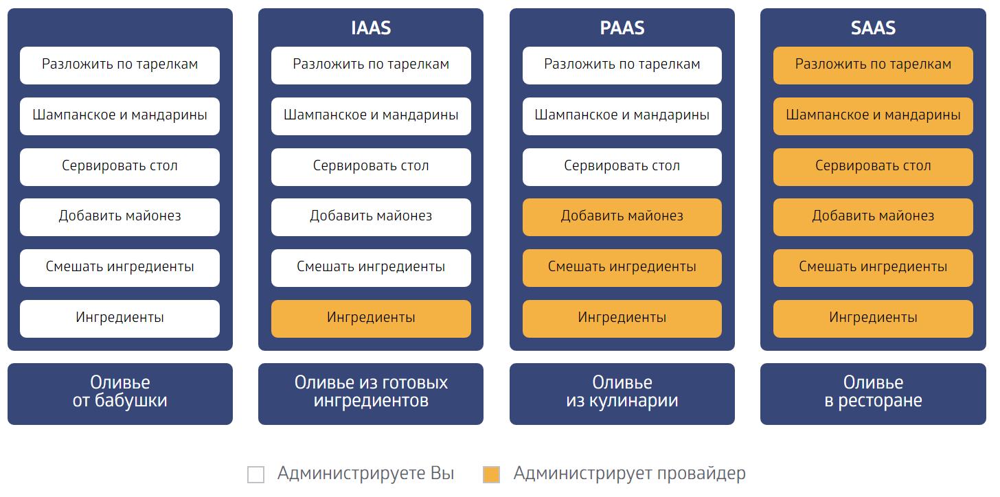

Облачные вычисления
Безопасность приложений на платформе облачных вычислений
Гладкий Максим Валерьевич / github:MaksHladki
Содержание
Определения
Облачные технологии - удобная среда для хранения и обработки информации, объединяющая в себе аппаратные средства, лицензионное программное обеспечение, каналы связи, а также техническую поддержку пользователей
Облачные вычисления - технология распределенной обработки данных, при которой совместно используемые компьютерные ресурсы, программное обеспечение и данные предоставляются пользователям по запросу как услуги через Интернет
Краткая история
1950е-1990е
- 1950е - появление мейнфреймов позволило нескольким пользователям получить доступ к центральному компьютеру
- 1960е - появление первых идей облачных вычислений. Концепция «межгалактической компьютерной сети» Дж. Ликлайдера
- 1970е - появление концепции модели приложений, при которых все вычисления и обработка информации осуществляются не на компьютере пользователя, а на удаленных серверах
- 1999 - образование компании Salesforce.com, которая предоставила доступ к своему ПО через сайт по принципу «программное обеспечение как сервис» (SaaS)
2000-2009
- 2002 - Amazon.com начинает предоставлять услуги по доступу к вычислительным ресурсам через Интернет
- 2006 - Amazon запустила сервис Elastic Compute cloud (EC2), позволяющий пользователям запускать свои собственные приложения
- 2006 - Google выпускает сервис "Google Apps для вашего домена"
- 2007 - Google выпускает коммерческую версию для предприятий. Хранилище Gmail расширено до 25 ГБ
- 2008 - Google App Engine
- 2008 - Microsoft выпускает первую весию облачной ОС Windows Azure
- 2008 - HP, Intel и Yahoo создают вычислительную лабораторию "Cloud COMPUTING"
2010 - наши дни
- 2010 - Выходит публичная версия сервиса Dropbox
- 2010 - Выделены модели IaaS, PaaS, SaaS
- 2011 - Национальный институт стандартов и технологий сформировал определение понятия "облачные вычисления"
- 2014 - Большинство крупнейших ИТ-вендоров (Google, Microsoft, HP, Intel, SAP, IBM, Oracle и т.д.) имеют собственные решения cloud computing
- 2014-наши дни - Работают маркетологи
Поставщики облачных решений
| Cloudera | GigaSpaces | Heroku | SAP |
| Parallels | Red Hat | Amazon | Zoho |
| AT&T | Cisco | Dell | Dropbox |
| IBM | HP | McAfee | VMware |
| Trend Micro | Citrix | NTT | |
| Microsoft | Oracle | Salesforce | Yandex |
Почему именно "Облачные"
Основные характеристики
Масштабируемость
Масштабируемое приложение способно выдерживать большую нагрузку за счет увеличения количества одновременно запущенных экземпляров облачных систем. Для одновременного запуска множества экземпляров облачных систем используется типовое оборудование, что снижает общую стоимость владения и упрощает сопровождение инфраструктуры
Эластичность
Решает задачу моментального изменения количества вычислительных ресурсов, выделяемых для работы информационной системы. Эластичность позволяет быстро нарастить мощность инфраструктуры без необходимости проведения начальных инвестиций в оборудование и программное обеспечение
Изолированность
Возможность независимо обслуживать пользователей из разной организации в рамках одного сервиса (одной инсталляции или развертывания). Клиенты не должны видеть данные друг друга
Плата за использование
Позволяет перевести часть капитальных издержек в операционные. Приобретая только необходимый объем ресурсов, можно оптимизировать расходы, связанные с работой информационных систем организации
Самообслуживание
Предполагает обеспечение доступа пользователя через Интернет к управлению вычислительной мощностью. Самообслуживание позволяет потребителям оперативно запросить и получить требуемые ресурсы облачной системы
Широкий сетевой доступ
Предоставляемые вычислительные ресурсы доступны по сети через стандартные механизмы для различных платформ, тонких и толстых клиентов (мобильных телефонов, планшетов, ноутбуков, рабочих станций и других устройств)
Модели развертывания облачных систем
Private Cloud
Определение
Инфраструктура, предназначенная для использования одной организацией, включающей несколько потребителей (например, подразделений одной организации), возможно также клиентами и подрядчиками данной организации
Особенности
- Весь бизнес выстроен на приложениях и данных, уровень требований к защите информации критически высокий
- Бизнес принадлежит к одной из тех отраслей, где требования к безопасности и конфиденциальности информации исторически очень высоки (военная промышленность, госсектор)
- Компания достаточно велика для того, чтобы создание собственного современного ЦОДа было рентабельным
Преимущества
- Широкие возможности для контроля (все компоненты ИТ-инфраструктуры остаются на стороне организации)
- Объедение ресурсов в пулы
- Высокий уровень безопасности (потребителем сервиса является одна единственная организация)
- Запрет на обработку персональных данных граждан за пределами страны
- Более высокая производительность частных облаков
- Повышение оперативности работы ИТ-отделов
Недостатки
- Значительные расходы на всех этапах жизненного цикла облака, от внедрения до поддержки работоспособности
- Затраты на администрирование и привлечение квалифицированных ИТ-специалистов
- Проблема горизонтальной масштабируемости
- Более существенные риски потери работоспособности сервисов и или потери данных из-за физических угроз для инфраструктуры
- Возможные проблемы с масштабируемостью, когда ресурсов инфраструктуры может оказаться недостаточно
Public Cloud
Определение
Публичное облако — инфраструктура, предназначенная для свободного использования широкой публикой. Публичное облако может находиться в собственности, управлении и эксплуатации коммерческих, научных и правительственных организаций (или какой - либо их комбинации). Физически существует в юрисдикции владельца — поставщика услуг
Преимущества
- Большая простота и эффективность использования
- Доступ к приложениям требует только стабильный Интернет
- Тарификация услуг осуществляется помесячно и на базе годовых планов, система тарифов гибкая, и провайдеры реализуют скидки при оплате за длительный промежуток времени
- Возможность сократить бюджет за счет отсутствия расходов на «железо» и софт
- Возможность отказаться от услуг ИТ-специалистов
- Автомасштабируемость - модель pay-as-you-go позволяет оплачивать именно столько ресурсов, сколько требуется в данный момент, и оперативно регулировать этот параметр
- Отсутствие долгосрочных контрактов и взаимных обязательств с ИТ-компаниями (позволяет менять облачного провайдера по мере необходимости)
Недостатки
- Отсутствие возможности контроля со стороны организации
- Более слабая защищенность данных
- Медленная скорость - производительность напрямую зависит от стабильности и широты пропускания интернет-соединения, в некоторых случаях передача данных может быть медленной. При оперировании большими объемами данных публичные облака не выдерживают конкуренции с частными по производительности
Правила выбора
- Стандартизированное приложение используется большим количеством клиентов (электронная почта)
- Необходимо протестировать работу программного кода или приложения
- Используется SaaS-приложение от проверенного провайдера, имеющего проработанную стратегию в области безопасности
- Требуется подкрепить возможности собственной инфраструктуры в ситуации пиковых нагрузок
- Нужны для обеспечения совместной работы нескольких организаций
Hybrid Cloud
Определение
Гибридное облако — комбинация из двух или более различных облачных инфраструктур (частных, публичных или общественных), остающихся уникальными объектами, но связанных между собой стандартизованными или частными технологиями передачи данных и приложений (например, кратковременное использование ресурсов публичных облаков для балансировки нагрузки между облаками)
Преимущества
- Критически важные приложения остаются внутри предприятия, а остальные располагаются в облаке
- Облако используется в качестве временного рабочего пространства
- Облако используется в случае внезапных пиковых нагрузок и дополнительной емкости
Недостатки
- Отсутствие контроля над данными - безопасность и техническое обслуживание должен обеспечивать поставщик услуг
- Неопределенность физического местонахождения данных
- Отсутствие контроля над резервным копированием, повышает риск потери данных
Сценарии использования
- В качестве партнера, когда критически важные приложения остаются внутри предприятия, а остальные располагаются в облаке
- В качестве полигона, когда облако используется в качестве временного рабочего пространства
- В качестве дополнительной емкости, когда облако используется в случае внезапных пиковых нагрузок
Взаимодействие моделей
Архитектура облачных сервисов
Общий вид
Виртуализация
Виртуализация — предоставление набора вычислительных ресурсов или их логического объединения, абстрагированное от аппаратной реализации, и обеспечивающее при этом логическую изоляцию друг от друга вычислительных процессов, выполняемых на одном физическом ресурсе
ИЛИ
Технология виртуализации позволяет создать несколько виртуальных машин на одном физическом компьютере и совместно использовать его ресурсы в нескольких средах
Гипервизор
Гипервизор – это платформа виртуализации, позволяющая запускать на одном физическом компьютере несколько операционных систем. Именно гипервизор предоставляет изолированное окружение для каждой виртуальной машины, и именно он предоставляет гостевым ОС доступ к аппаратному обеспечению компьютера
Гипервизор 1 типа

Гипервизор 2 типа
Инфраструктура как услуга (IaaS)
Определение
Infrastructure as a Service - модель предоставления услуг с возможностью использования облачной инфраструктуры для самостоятельного управления ресурсами обработки, хранения, сетями и другими фундаментальными вычислительными ресурсами
Особенности
Потребитель может устанавливать и запускать произвольное программное обеспечение:
- Операционные системы
- Платформенное и прикладное ПО (базы данных, сервисы, приложения)
- Сетевые сервисы (межсетевые экраны, DNS и т.д.)
Особенности
- Ресурсы распространяются в качестве услуги
- Существует возможность динамического расширения (и сокращения) объемов потребляемых ресурсов
- Реализованы гибкие модели оплаты (например, оплата только за фактически потребленные ресурсы — модель pay as you go)
- Как правило, с одним физическим «железным» ресурсом работают несколько пользователей
- Контроль и управление основной физической и виртуальной инфраструктурой облака, в том числе сети, серверов, типов используемых операционных систем, систем хранения осуществляется облачным провайдером
Преимущества
- Отсутствие необходимости закупать дорогое серверное оборудование, модернизировать аппаратную инфраструктуру и заниматься увеличением вычислительных мощностей сервера
- Отсутствие расходов на плановый/внеплановый ремонт серверного оборудования
- Не нужно выделять отдельное помещение с необходимой вентиляцией для размещения серверного оборудования;
- Данные клиентов хранятся в распределенной и резервированной сети хранения, а доступ к ним уполномоченные сотрудники могут получить через интернет по безопасной защищенной сети IPsec/VPN
Недостатки
- Достаточно сильную зависимость от провайдера
- Необходимость стабильной связи интернет-соединения
- Вопрос недоверия - далеко не все компании готовы разместить данные в инфраструктуре третьей стороны
Платформа как услуга (PaaS)
Определение
Platform as a Service - модель предоставления услуг, когда потребителю предоставляется возможность использования облачной инфраструктуры для размещения базового ПО для последующего размещения на нём новых или существующих приложений (собственных, разработанных на заказ или приобретённых тиражируемых приложений)
Платформа - это слой абстракции между программными приложениями (SaaS) и виртуализованной инфраструктурой (IaaS). Основной целевой аудиторией PaaS являются разработчики приложений
Включает в себя
- Инструментальные средства создания ПО (Visual Studio)
- Инструменты тестирования ПО (Jenkins)
- Инструменты выполнения прикладного ПО (среды выполнения ЯП)
Распространенные сценарии PaaS
- Среда для разработки - предоставляет среду, которую разработчики используют для создания или управления облачными приложениями. Облачные функции, такие как масштабирование, высокая доступность и поддержка нескольких пользователей, уже включены в платформу и снижают объем кода и время на разработку и тестирование
- Бизнес-аналитика - встроенные механизмы позволяют организациям анализировать данные, находить тенденции и делать прогнозы с целью улучшения планирования, повышения возврата от инвестиций и принятия бизнес-решений
- Дополнительные службы (повышают возможности приложений, такие как рабочие процессы, каталоги, безопасность и планирование)
Преимущества
- Отсутствует необходимость в закупке серверов и создания центра обработки данных
- Исключены проблемы с законодательством из-за нелицензионного программного обеспечения
- Клиент имеет свободу в установке и выборе ПО и служб
Недостатки
- Слабый контроль безопасности приложений
- Безопасность, связанная с управлением через API (подтверждение прав доступа, авторизация и проверка подлинности и т.д.)
Примеры
- Компоненты Windows Azure
- Компоненты Amazon Web Services
- Google App Engine
- Salesforce
- Heroku
Программное обеспечение как услуга (SaaS)
Определение
Software as a Service - модель услуг, в которой потребителю предоставляется возможность использования прикладного программного обеспечения провайдера, работающего в облачной инфраструктуре и доступного из различных клиентских устройств посредством тонкого клиента либо интерфейса программы
Ограничение
Контроль и управление основной физической и виртуальной инфраструктурой облака, в том числе сети, серверов, операционных систем, хранения, или даже индивидуальных возможностей приложения (за исключением ограниченного набора пользовательских настроек конфигурации приложения) осуществляется облачным провайдером
Особенности
- Приложение приспособлено для удаленного использования
- Одним приложением пользуется несколько клиентов (приложение коммунально)
- Оплата взимается либо в виде ежемесячной абонентской платы, либо на основе объема операций
- Техническая поддержка приложения включена в оплату
- Модернизация и обновление приложения происходит оперативно и прозрачно для клиентов
- ПО развертывается в центре обработки данных в виде единого программного ядра, с которым работают все заказчики
Недостатки
- Оказывается неэффективной для систем, требующих глубокой индивидуальной адаптации под каждого заказчика
- Опасения применять SaaS из-за соображений безопасности и возможной утечки информации со стороны поставщика услуг
- Ограничивающим фактором SaaS является необходимость наличия постоянно действующего подключения к Интернету
Плюсы для разработчиков
- Рост популярности веб-сервисов для конечных пользователей
- Развитие веб-технологий, большие функциональные возможности веб-приложений и простота их реализации
- Быстрые процессы внедрения и сравнительно низкие затраты ресурсов на обслуживание конкретного клиента
- Легкое проникновение на глобальные рынки
- Отсутствие проблем с нелицензионным ПО
- SaaS-клиент привязывается к разработчику — он не может отказаться от услуг разработчика и продолжать использовать систему. Обеспечивается защита инвестиций разработчика в процесс продаж
- Разработчик выбирает программно-аппаратную платформу из соображений ее технико-экономической эффективности, а не из соображений распространенности у возможных пользователей ПО
Альтернативы SaaS
- Облачные платформы - если клиент не захочет отдавать свои коммерческие данные стороннему провайдеру, то ему будет выгоднее арендовать не приложение, а компьютерные мощности, на которые установить приобретенное программное обеспечение
- Хостинг приложений - хостинг-провайдер осуществляет установку отдельной копии приложения для каждого клиента вместо обслуживания одновременно нескольких пользователей. Этот процесс более сложно администрировать и выполнять обновление ПО, поэтому и стоит такая услуга дороже
- S+S – модель от Microsoft, которая предлагает для доступа к сервису использовать не браузер, а программный клиент
Примеры SaaS систем
- Корпоративная почта (Gmail, Яндекс)
- CRM и ERP - системы для управления проектами и ресурсами
- Системы документооборота (google docs, docusign), органайзеры, календари
- Услуги хостинга сайтов
Сравнение
Оливье
Другие модели обслуживания
- Аппаратное обеспечение как услуга (Hardware as a Service)
- Рабочее место как услуга (Workplace as a Service)
- Данные как услуга (Data as a Service)
- Безопасность как услуга (Security as a Service)
- База данных как услуга (Database as a service)
Рынок облачных услуг
Пример развертывания веб-приложения
Переход из dashbord'a

Панель управления веб-сайтами

Коллекция приложений

Коллекция приложений

Коллекция приложений

Коллекция приложений
Выбор приложения

Создание приложения
Параметры приложения
Процесс развертывания

Обзор приложения

Быстрый старт

Интеграция

Выбор репозитория
Выбор ветки

Результат интеграции

Результат интеграции

Мониторинг посещений

Резервирование

Консоль

Безопасность облачных систем
Классификация угроз
- Защита периметра и разграничение сети
- Динамичность виртуальных машин
- Защищенность данных и приложений
- Защита автоматизированного рабочего места (АРМ)
- Несанкционированный доступ к среде виртуализации
- Защита бездействующих виртуальных машин
- Управление обновлениями
Классификация атак
- Традиционные атаки на ПО
- Функциональные атаки на элементы облака
- Атаки на клиента
- Атаки на гипервизор
- Атака на виртуальные машины при их переносе с одного узла на другой
- Атаки на системы управления
Средства защиты информации в ВР
- Межсетевые экраны (брандмауэры)
- Средства обнаружения и предотвращения вторжений
- Средства контроля целостности
- Средства защиты от вредоносных программ, учитывающие виртуализацию
- Средства защиты от несанкционированного доступа
- Средства контроля политик безопасности в виртуальных инфраструктурах
- Самозащищенные данные
- Доверенный монитор
Концепция создания безопасных SaaS-систем
Cloud Security Alliance
- Содействие нахождению взаимопонимания между потребителями и поставщиками услуг в части требований безопасности и контроля качества
- Проведение независимых исследований в части защиты облачных вычислений
- Разработка и проведение программ повышения осведомленности в области облачных вычислений и обеспечению безопасности
- Разработка руководств и методических рекомендаций по обеспечению безопасности облачных вычислений